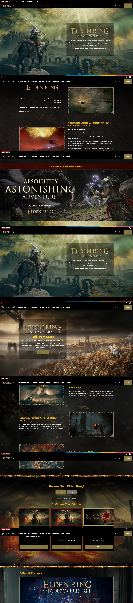
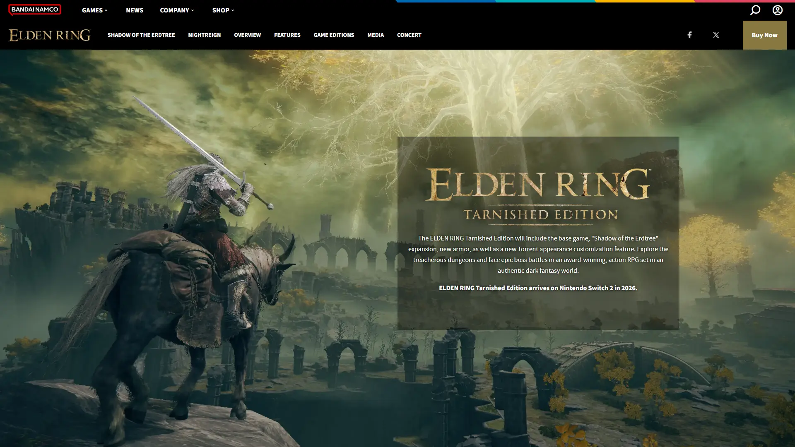
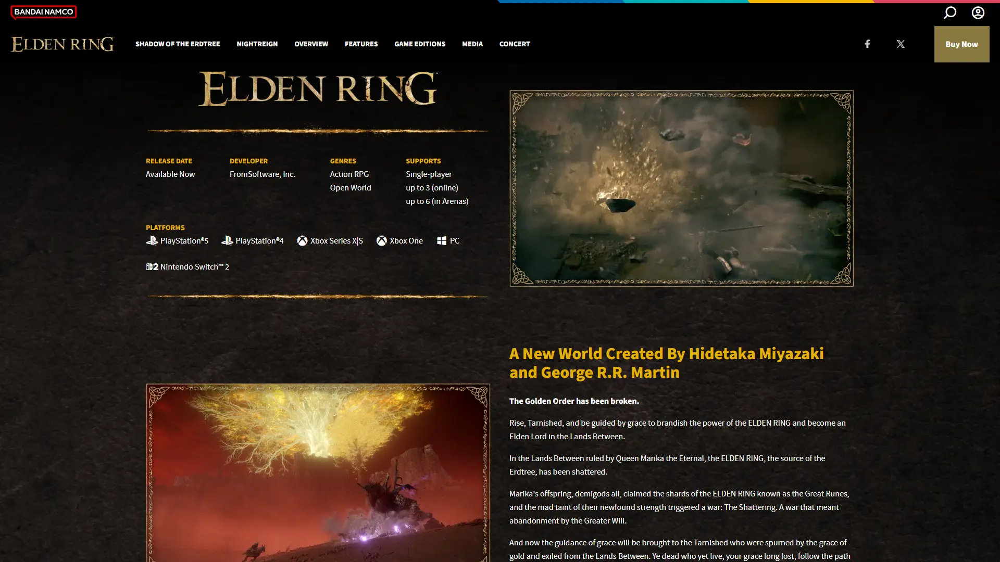
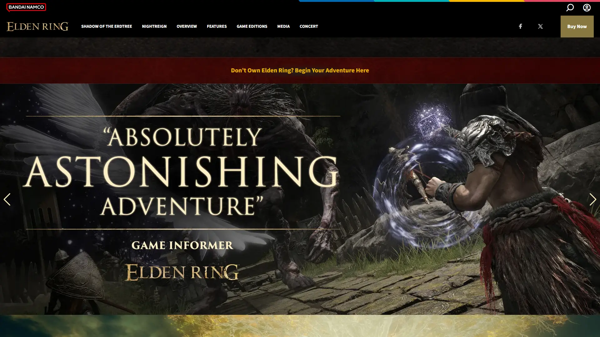
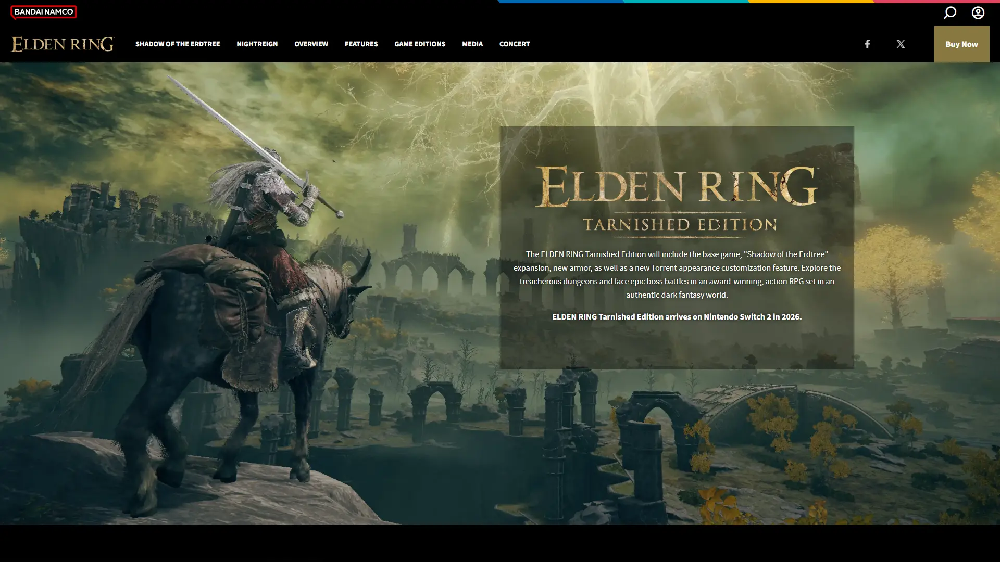
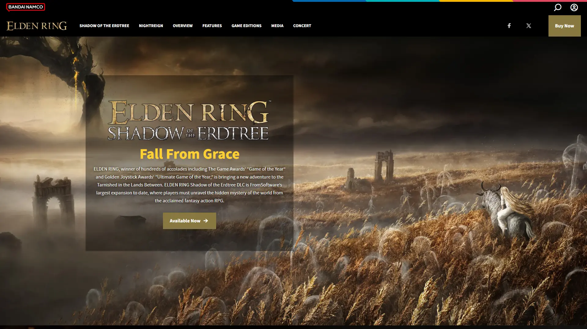
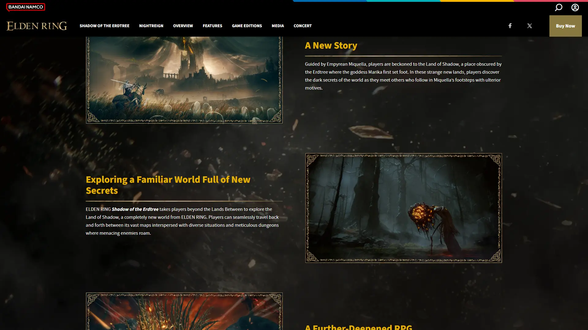
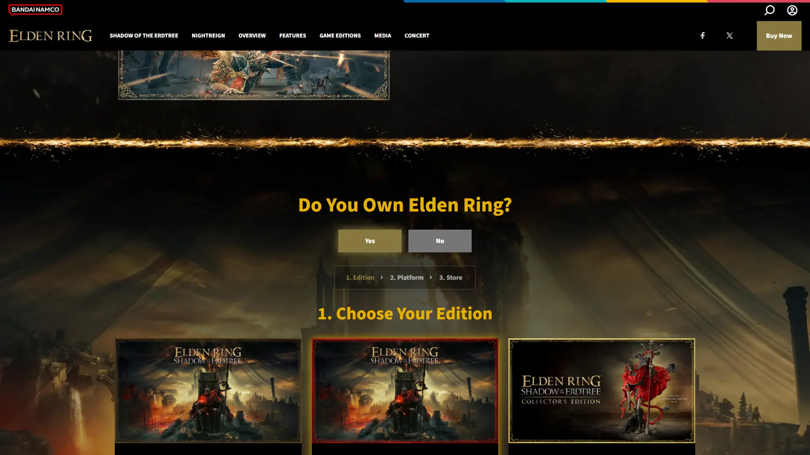
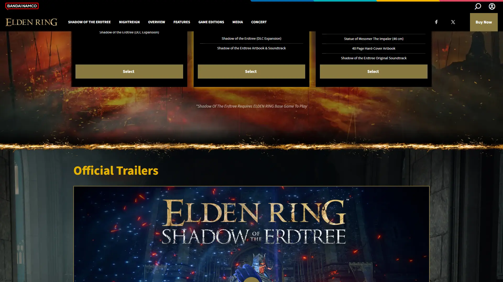

《艾尔登法环》大型 DLC，为史上最高评游戏之一的拓展内容。








想象一片被黄金树阴影彻底遮蔽的大陆——灰紫色天空下，曾经辉煌的神殿只剩腐金色的残骸，荒原上散落着角人族被屠杀后的骨堆与祭坛。这不是交界地那个还有阳光的世界——这是被历史抹杀的证据现场。FromSoftware 把宫崎英二那套「美丽即衰败」的暗黑奇幻推到了前所未有的极致：地下的Abyssal Woods 是这个系列最恐怖的场景，密林深处有你不可战胜的追踪者在无声移动。
你是褪色者——追随 Miquella 的足迹闯入这片禁地。Miquella 是什么？一个永远长不大的半神，黄金一族最纯洁的血脉，可他选择抛弃黄金律法、走向影之地。一路上你遇到Messmer——火蛇缠绕的骑士，黄金一族的弃子兼屠夫，他曾在这片大陆对角人族执行种族清洗。每一个 NPC、每一段碎片化对话都在告诉你同一件事：黄金树的光辉不是祝福，是遮掩罪行的幕布。
那个在教堂里对你微笑的角人族老者，下一秒可能因为你身上的黄金气息而拔刀相向；那个火蛇缠身的 Messmer，他的剑法优雅得像舞蹈——可他屠杀了整个文明；那尊你在影之地尽头找到的 Miquella 真身，揭示了比所有暴行更令人绝望的真相。这不是一个关于拯救的故事，是一个关于「黄金树下到底埋了什么」的故事——影之地已经向你敞开，你准备好面对答案了吗？
黄金腐败 × 暗黑奇幻，是 FromSoftware 把中世纪哥特美术（废墟、板甲、圣堂）和宫崎英二式的衰败美学（曾经辉煌的事物在时间里腐烂）推到极致的混血产物。底色是熟悉的暗黑奇幻——灰石城堡、荒原、骑士与巨兽；变异在于所有「金色」都带着腐败——黄金不是荣耀而是谎言的颜色。色彩锁定腐金 + 灰紫 + 火蛇红三色组合。整体调性介于《黑暗之魂》的绝望美学和《指环王》中古奇幻壮美之间——既宏大又腐朽。
暗黑奇幻视觉的现代演化跨越了半个多世纪。1954 年托尔金《指环王》奠定了中古奇幻的视觉基底——城堡、荒野、精灵与亡灵。1977 年弗兰克·弗雷泽塔的奇幻画作把暗黑美学带入流行文化。1986 年三浦建太郎《剑风传奇》在漫画中定型了「高度细节化的中世纪暗黑暴力美学」——这是宫崎英二最直接的视觉影响源。2001 年彼得·杰克逊《指环王》电影把中古奇幻推到好莱坞工业顶端。2011 年《黑暗之魂》系列开始构建 FromSoftware 独有的「衰败 + 碎片化叙事」视觉体系。2022 年《艾尔登法环》本体把这套美学放进开放世界；2024 年黄金树幽影将「腐金」作为核心视觉母题推到系列最高点——94 分 Metacritic 证明这套美学已成为当代游戏视觉的顶级标杆。
基于体验清单 · 审美偏好 · IP故事三维度综合选出